本節のイントロダクション：
これまで13の小節を費やして、AndroidのPaintクラスの大部分のよく使うAPIについて詳しく解説しました。本節からはCanvas（画板）のよく使うAPIを解説していきます。私たちは
8.3.1 三つの描画ツールクラスの詳解 の中で、呼び出し可能ないくつかのメソッドを挙げました。分類してみましょう：
- drawXxxメソッド群：一定の座標値で現在の描画領域に描画します。また、レイヤーは重なっていきます。つまり、後から描画したレイヤーは前に描画したレイヤーを覆います。
- clipXXXメソッド群：現在の描画領域から新しい描画領域をクリップ(clip)して切り出します。この描画領域がcanvasオブジェクトの現在の描画領域になります。例：clipRect(new Rect()) の場合、その矩形領域がcanvasの現在の描画領域になります。
- getXxxメソッド群：Canvasに関連するいくつかの値、たとえば幅・高さ、画面密度などを取得します。
- save()，restore()，saveLayer()，restoreToCount()など、レイヤーを保存・復元するメソッド
- translate(平行移動)scale(拡大縮小)rotate(回転)、skew(傾斜)
もちろん、他にもいくつか点在するメソッドがありますが、ええと、本節からは少し面白そうなAPIを選んで学んでいきます。
そして本節ではまず皆さんに紹介するのはtranslate(平行移動)scale(拡大縮小)rotate(回転)、skew(傾斜)save()，restore()の詳しい解説です！
公式APIドキュメント：Canvas
また、まずCanvasにおけるX軸とY軸の方向を明確にしておきましょう：
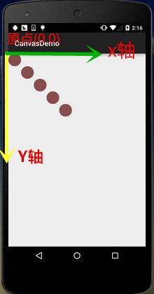
1.translate（平行移動）
メソッド：translate(float dx, float dy)
解説：平行移動。キャンバスの座標原点を左右方向にx、上下方向にy移動します。canvasのデフォルト位置は(0,0)です。
パラメータ：dxは水平方向の移動距離、dyは垂直方向の移動距離です。
使用例：
for(int i=0; i < 5; i++) {
canvas.drawCircle(50, 50, 50, mPaint);
canvas.translate(100, 100);
}
実行結果：
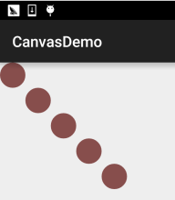
2.rotate（回転）
メソッド：rotate(float degrees) / rotate(float degrees, float px, float py)
解説：座標原点を中心にdegrees度回転します。値が正の場合は時計回りです。
パラメータ：degreesは回転角度、pxとpyは指定する回転の中心点座標(px,py)です。
使用例：
Rect rect = new Rect(50,0,150,50);
canvas.translate(200, 200);
for(int i = 0; i < 36;i++){
canvas.rotate(10);
canvas.drawRect(rect, mPaint);
}
実行結果：
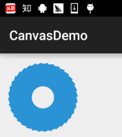
コード分析：
ここではまず translate(200，200) を呼び出してcanvasの座標原点を(200,200)に移動させてから描画しています。そのため描画結果はキャンバス上に完全に表示されます。もしrotateに(10,200,200)を設定した場合、次のような結果になります：
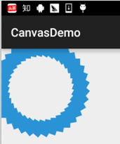
疑問に思うでしょう？これはCanvasの複数レイヤーの概念に関わります。後で説明します。
3.scale（拡大縮小）
メソッド：scale(float sx, float sy) / scale(float sx, float sy, float px, float py)
解説：キャンバスを拡大縮小します。
パラメータ：sxは水平方向の拡大縮小率、syは垂直方向の拡大縮小率です。pxとpyは私も知りません。小数は縮小， 整数は拡大
使用例：
canvas.drawBitmap(bmp,0,0,mPaint); canvas.scale(0.8f, 0.8f); canvas.drawBitmap(bmp, 0, 0, mPaint); canvas.scale(0.8f, 0.8f); canvas.drawBitmap(bmp,0,0,mPaint);
実行結果：
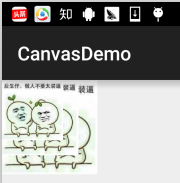
4.skew（傾斜）
メソッド：skew(float sx, float sy)
解説：傾斜。斜切（斜めに切り取る）や扭曲（ゆがみ）とも訳せます。
パラメータ：sxはx軸方向の傾きに対応する角度、syはy軸方向の傾きに対応する角度です。2つの値はどちらもtan値ですよ！どちらもtan値です！どちらもtan値です！たとえばx軸方向に60度傾けたい場合、小数値は tan 60 = √3 = 1.732 となります！
使用例：
canvas.drawBitmap(bmp,0,0,mPaint); canvas.translate(200, 200); canvas.skew(0.2f,-0.8f); canvas.drawBitmap(bmp,0,0,mPaint);
実行結果：
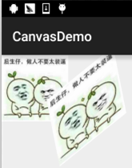
5.Canvasレイヤーの概念とsave()およびrestore()の詳解
私たちは一般的にCanvasのことを「画布（キャンバス）」と呼びます。皆さんはCanvasを単なる一枚の画用紙だと思っているかもしれません。では、多層のアニメーションはどのようにcanvasを使って実現されるのでしょうか？先ほどのtranslateの平行移動の例で、なぜ drawCircle(50, 50, 50, mPaint); の基準座標が常に(50,50)なのに、このような結果になるのでしょうか？疑問に思っている方は、おそらく画面の概念とCanvasの概念を混同しているのでしょう。それでは、translateを呼び出した現場を再現してみましょう：
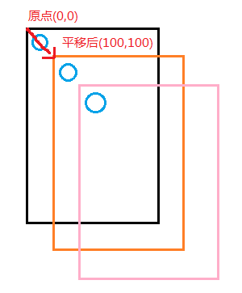
図のように、キャンバスの座標原点は毎回それぞれx軸、y軸上で100ずつ移動します。では、再び(0,0)に戻って新しい図形を描きたい場合はどうすればいいのでしょうか？どうやって解決する？translate(-100,-100)で少しずつ平行移動して戻るのでしょうか？まさかそんなに悩むことはないですよね…
わかりました、謎かけはやめにしましょう。平行移動の変換を行う前に、現在のcanvasの状態を保存することができます。実はCanvasはレイヤー（Layer）のサポートを提供しており、これらのLayer（レイヤー）は「スタック構造」によって管理されています。
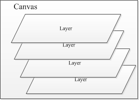
私たちがsave()メソッドを呼び出すと、現在のCanvasの状態を保存し、それを1つのLayer（レイヤー）としてCanvasスタックに追加します。また、このLayer（レイヤー）は具体的なクラスではなく、概念的なものにすぎません！
一方、私たちがrestore()メソッドを呼び出すと、以前のCanvasの状態が復元されます。このとき、Canvasのレイヤースタックはスタックの最上位にあるLayerをポップし、後続のLayerがスタックの先頭に来ます。この時点のCanvasは、そのスタック先頭で保存されたCanvasの状態に戻ります！
簡単に言うと、：save()はスタックに1つのLayerをプッシュし、restore()はスタックの最上位にある1つのLayerをポップします。このLayerはCanvasの状態を表します！つまり、save()は複数回呼び出せますし、restore()も複数回呼び出せます。ただし、restoreの呼び出し回数はsaveを超えてはなりません。そうでなければエラーが発生します！さあさあ、例を書いてsaveとrestoreの働きを検証してみましょう！
例を書きます：
サンプルコード：
canvas.save(); //保存当前canvas的状态 canvas.translate(100, 100); canvas.drawCircle(50, 50, 50, mPaint); canvas.restore(); //恢复保存的Canvas的状态 canvas.drawCircle(50, 50, 50, mPaint);
実行結果：
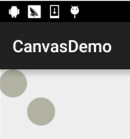
何も言う必要はないでしょう。コードと結果がすべてを物語っています。次はもう少し複雑にして、複数のsave()とrestore()をやってみましょう！
サンプルコード：
canvas.save(); canvas.translate(300, 300); canvas.drawBitmap(bmp, 0, 0, mPaint); canvas.save(); canvas.rotate(45); canvas.drawBitmap(bmp, 0, 0, mPaint); canvas.save(); canvas.rotate(45); canvas.drawBitmap(bmp, 0, 0, mPaint); canvas.save(); canvas.translate(0, 200); canvas.drawBitmap(bmp, 0, 0, mPaint);
実行結果：
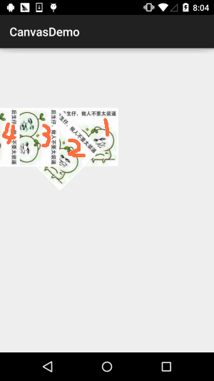
結果分析：
まず(300,300)に平行移動して描画し、次に45度回転して描画し、さらに45度回転して描画し、続いて(0,200)に平行移動します。その間、毎回描画する前にsave()を呼び出します。ここまで見ると疑問に思うかもしれません。最後の平行移動はy方向に200移動するはずでは？なぜ左向きになったのでしょうか？へへ、rotate()が回転させるのは座標軸全体だと言ったら？座標軸の変化：
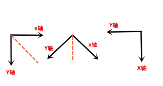
うん、rotate()は理解できましたね。それなら大丈夫です。次はrestoreを試してみましょう。最後の描画の前にrestore()を2つ追加します！
canvas.restore(); canvas.restore(); canvas.translate(0, 200); canvas.drawBitmap(bmp, 0, 0, mPaint);
実行結果：
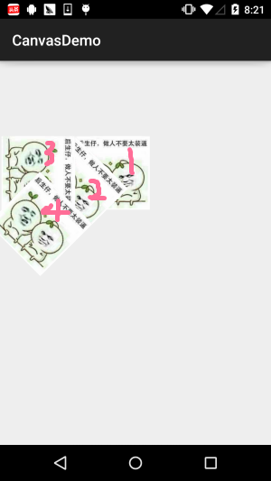
何も言わずに、自分で感じてください。さらに追加します。restore()！
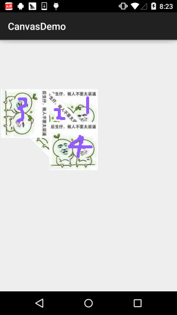
ちょっと面白いですね。もう一度、さらに追加します。restore()
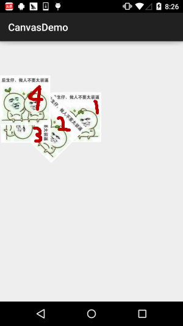
うーん、もう書けないような気がします。restoreですよね？なぜならsaveを4回しか呼び出していないからです。ネット上の説によれば、これはエラーになるはずです。本当にそうでしょうか？ここではCanvasが提供する、現在のスタックにいくつのLayerがあるかを取得するメソッドを呼び出します：getSaveCount()；そしてsave()とrestore()の前後にそれぞれLogを追加して、スタック内のLayerの数を出力します：
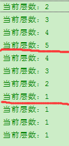
結果は本当に喜ばしいものです。何しろ実践が真実を生むのですから。Canvasが変更されたのか、あるいは他の原因かもしれません。ここはソースコードを見るまでわかりません。時間の都合上、ここではrestoreの回数がsaveより多くてもよいことを知っておけば十分です。ただし、不要な問題を避けるためにも、restoreの回数はsaveより少なくすることをお勧めします。スタックへのプッシュとポップの流れについては、私は描きません。読者の皆さんが自分で手を動かして絵を描けば、非常に理解しやすいです！
6.saveLayer()とrestoreToCount()の解説
実はこの2つのメソッドはsaveやrestoreとほとんど同じで、後者の基礎の上にいくつかのものが追加されているだけです。例えばsaveLayer()には、以下のような複数のオーバーロードメソッドがあります：
あなたはこう理解できます：save()メソッドが保存するのはCanvas全体であり、saveLayer()は選択的に特定の領域の状態を保存できます。int saveFlagsこれは保存する対象を設定するものです！選択可能な値は次のとおりです：

| フラグ | 説明 |
|---|---|
| ALL_SAVE_FLAG | すべての状態を保存 |
| CLIP_SAVE_FLAG | クリップされた特定の領域の状態を保存 |
| CLIP_TO_LAYER_SAVE_FLAG | 事前に設定された範囲内の状態を保存 |
| FULL_COLOR_LAYER_SAVE_FLAG | カラーレイヤーを保存 |
| HAS_ALPHA_LAYER_SAVE_FLAG | 不透明レイヤーを保存 |
| MATRIX_SAVE_FLAG | Matrix情報（translate、rotate、scale、skew）の状態を保存 |
PS：上記の説明には少し問題があります。筆者の英語力が低く、間違っているかもしれません。もしご存知の方がいらっしゃいましたら、ぜひご指摘ください。ありがとうございます〜
ここで例を書いて検証してみましょう：私たちはCLIP_TO_LAYER_SAVE_FLAGモードを使って例を書きます
実装コード：
RectF bounds = new RectF(0, 0, 400, 400); canvas.saveLayer(bounds, mPaint, Canvas.CLIP_TO_LAYER_SAVE_FLAG); canvas.drawColor(getResources().getColor(R.color.moss_tide)); canvas.drawBitmap(bmp, 200, 200, mPaint); canvas.restoreToCount(1); canvas.drawBitmap(bmp, 300, 200, mPaint);
実行結果：
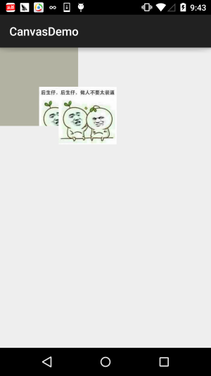
saveLayer()については後で使うときに詳しく研究しましょう〜ここでは大体を知っておくだけで十分です〜
次にこのrestoreToCount(int)これはさらに簡単で、復元したいLayerの層数を直接渡すと、そのまま対応する層にジャンプし、同時にその層の上にあるすべてのLayerをスタックからポップして、その層をスタックの先頭にします〜！複数のrestore()を書くよりずっと便利で速いです〜
7.本節のコードサンプルダウンロード：
うーん、コードはテスト用に書いたもので、持ってきてもあまり意味がないかもしれませんが、読者は欲しいかもしれないので、リンクを貼っておきます！
コードのダウンロード：CanvasDemo.zip皆さんが欲しいのはこの図でしょう！ははっ〜
本節のまとめ：
本節は数日悩んでやっと書き上げました。筆者は最初、このCanvasレイヤーの概念についてあまりはっきりしていませんでした。今日の午後、用事を終えてから考えを整理し、夜に残業してようやくこの記事を書き上げました。皆さんがCanvasをより明確に理解し、カスタムコントロールに進むときに迷わないように役立つと信じています〜えへへ、本節はここまでです。もし間違って書いた箇所があればご指摘歓迎します。本当にありがとうございます〜
クリックしてノートを共有
ノートは本記事の内容を拡張したものである必要があります！
記事投稿は、ここをクリック
招待コードの取得方法
ノートを共有する前にログインが必要です！
招待コードの取得方法